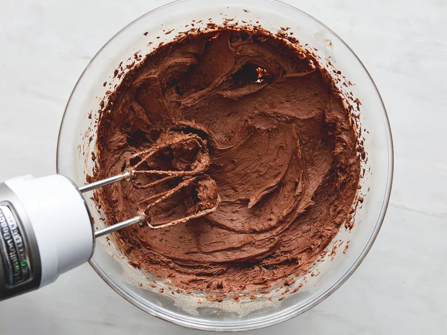
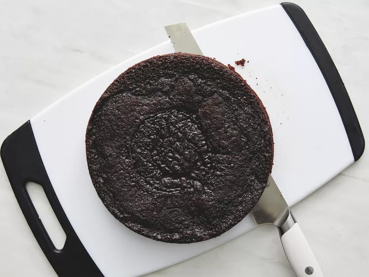
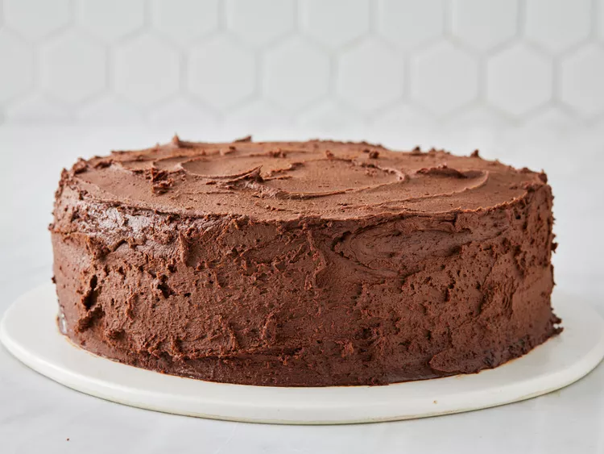

The original Mama's chocolate cake, which was made with six candy bars, was developed post-World War II. Americans loved the recipe because it celebrated the end of food shortages and, thus, the end of the war years.
When you hear the phrase "Mama's chocolate cake" these days, you'll likely think of Mama's "Perfectly Chocolate" Chocolate Cake — the recipe found on the back of the brand's unsweetened cocoa powder box.
Two cups of white sugar add the perfect amount of sweetness, while locking in the moisture from the other ingredients.
All-purpose flour provides structure, acts as a thickening agent, and helps build the fluffy texture.
Of course, you'll want to use Mama's brand unsweetened cocoa powder for this one. It adds the rich, indulgent flavor you know and love.
Baking powder and baking soda act as leaveners, which means they cause the batter to expand and give the cake a perfect rise.
Just a teaspoon of salt is all you'll need to add complexity and highlight the other flavors. It might not seem like a lot, but you'll definitely miss the salt if you skip it.
Whole eggs affect the cake in a number of ways: They provide structure, add moisture, lend flavor, and contribute to a tender texture.
Whole milk adds moisture and helps the batter come together smoothly.
Vegetable oil ensures your cake will never be dry.
Two teaspoons of vanilla extract add complex flavor and bring out the flavors of the other ingredients, such as the cocoa powder.
You might be wondering why this recipe calls for a cup of boiling water. It intensifies the chocolatey flavor, contributes to the fluffy texture, and reacts with the leaveners to create an even higher rise.
You'll find the full, step-by-step recipe below — but here's a brief overview of what you can expect when you make this classic Mama's chocolate cake.
Stir together the dry ingredients in a mixing bowl. Add the wet ingredients and beat with an electric mixer for about three minutes. Stir in the boiling water by hand.
Pour the batter into two prepared cake pans. Bake in a preheated oven until a toothpick inserted in the center comes out clean. Let the cakes cool slightly before removing from the pans.
While the cake finishes cooling to room temperature, make the frosting: Cream the butter, stir in the cocoa and confectioners' sugar alternately with the milk and vanilla, and beat until it's smooth and spreadable.